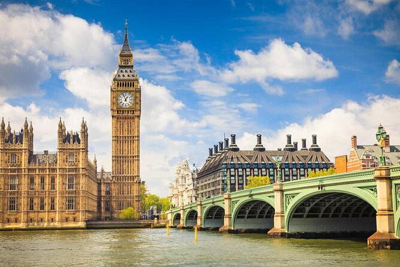
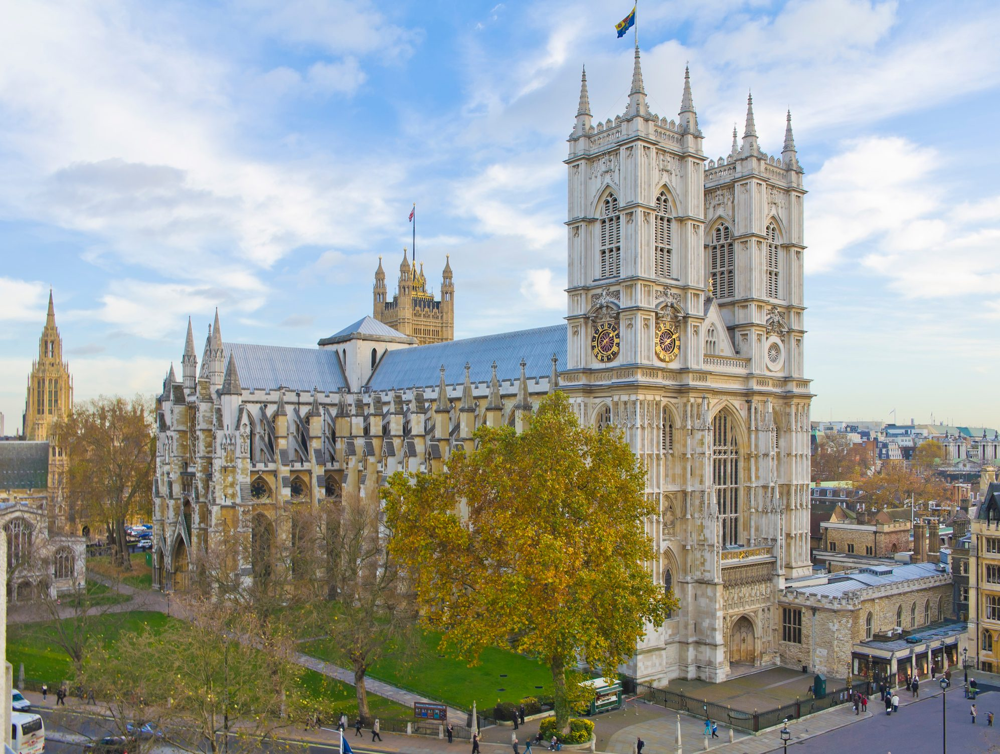

You will find here all you need to know about tourism in England.
If you’ve come in search of the patchwork fields and elegant country gardens you’ve seen on screen
– in Pride and Prejudice or Downton Abbey – you’ll find them and more. As you travel through villages
and towns,listen for the country’s rich tapestry of dialects, which seem to change in the space of a few miles!
Bursting with history, England prides itself on landmarks that stand the test of time including the Tower of London and the Eden Project.
Discover the eye-opening diversity that makes modern Britain – from global cuisine to urban culture. And at the heart of it all, find London.
This cutting-edge city is as into its new trends as its old traditions. You could spend weeks seeking out its hidden treasures, but to experience
England in all its glory, you’ll want to venture further afield.
The national English flag.
The Big Ben!
The Westminster Abbey.
Top 10 places to visit in England!
London travel guide
Top 10 Bucket List Destinations in England
Please provide us with your basic contact information.